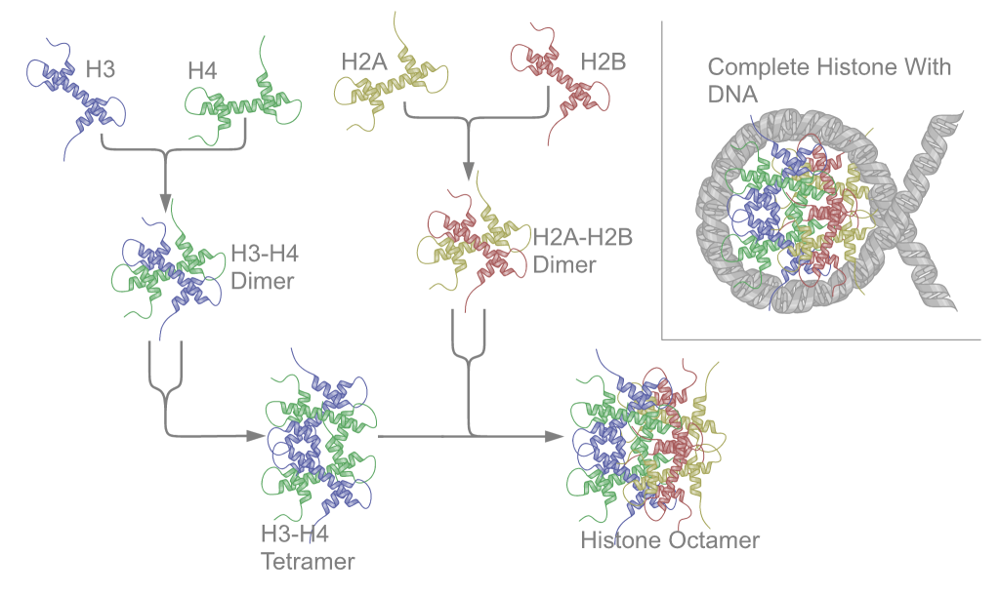

Overview of Chromatin Accessibility
Last updated: 2024-04-25
Checks: 7 0
Knit directory: GradLog/
This reproducible R Markdown analysis was created with workflowr (version 1.7.0). The Checks tab describes the reproducibility checks that were applied when the results were created. The Past versions tab lists the development history.
Great! Since the R Markdown file has been committed to the Git repository, you know the exact version of the code that produced these results.
Great job! The global environment was empty. Objects defined in the global environment can affect the analysis in your R Markdown file in unknown ways. For reproduciblity it’s best to always run the code in an empty environment.
The command set.seed(20201014) was run prior to running
the code in the R Markdown file. Setting a seed ensures that any results
that rely on randomness, e.g. subsampling or permutations, are
reproducible.
Great job! Recording the operating system, R version, and package versions is critical for reproducibility.
Nice! There were no cached chunks for this analysis, so you can be confident that you successfully produced the results during this run.
Great job! Using relative paths to the files within your workflowr project makes it easier to run your code on other machines.
Great! You are using Git for version control. Tracking code development and connecting the code version to the results is critical for reproducibility.
The results in this page were generated with repository version c50b98f. See the Past versions tab to see a history of the changes made to the R Markdown and HTML files.
Note that you need to be careful to ensure that all relevant files for
the analysis have been committed to Git prior to generating the results
(you can use wflow_publish or
wflow_git_commit). workflowr only checks the R Markdown
file, but you know if there are other scripts or data files that it
depends on. Below is the status of the Git repository when the results
were generated:
Ignored files:
Ignored: .DS_Store
Ignored: .Rhistory
Ignored: .Rproj.user/
Ignored: analysis/.DS_Store
Ignored: analysis/.Rhistory
Untracked files:
Untracked: rstudio_server_config_midway3.Rmd
Unstaged changes:
Modified: analysis/Trans.Rmd
Deleted: analysis/rstudio_server_config_midway3.Rmd
Modified: analysis/week_log.Rmd
Note that any generated files, e.g. HTML, png, CSS, etc., are not included in this status report because it is ok for generated content to have uncommitted changes.
These are the previous versions of the repository in which changes were
made to the R Markdown (analysis/chromatin.Rmd) and HTML
(docs/chromatin.html) files. If you’ve configured a remote
Git repository (see ?wflow_git_remote), click on the
hyperlinks in the table below to view the files as they were in that
past version.
| File | Version | Author | Date | Message |
|---|---|---|---|---|
| html | c50b98f | liliw-w | 2024-04-25 | Build site. |
| html | 6db7e76 | liliw-w | 2022-12-13 | Build site. |
| Rmd | b4a6868 | liliw-w | 2022-12-13 | Chromatin review |
| html | 34704ea | liliw-w | 2022-11-21 | Build site. |
| Rmd | 86b930d | liliw-w | 2022-11-21 | Initial commit on chromatin work |
If any figures don’t show, try opening in Safari.
Basics
Chromatin structure
Chromatin is a complex of DNA and protein found in eukaryotic cells.
The primary function is to package long DNA molecules into more compact, denser structures.
Histones prevent DNA from becoming tangled and protect it from DNA damage. In addition, histones play important roles in gene regulation and DNA replication.
Three levels of chromatin organization & The overall structure of the chromatin network further depends on the stage of the cell cycle.
 Chromatin Structures
Chromatin StructuresThe basic unit is a nucleosome: histone wound by DNA.
Nucleosome StructuresThe primary protein components of chromatin (DNA packaging protein) are histones.
- There are five major families of histones which are designated H1/H5 (linker histones), H2A, H2B, H3, and H4 (core histones).
An octamer of two sets of four histone cores (Histone H2A, Histone H2B, Histone H3, and Histone H4) bind to DNA and function as “anchors” around which the strands are wound.
The tight wrapping of DNA around histones is to a large degree a result of electrostatic attraction between the positively charged histones and negatively charged phosphate backbone of DNA.
Chromatin accessibility/compaction - Alter the local chromatin structure
Change chromatin accessibility by histone modification
The chromatin state, whether it’s open or closed, is controlled by epigenetic modifications (to the histone, or to the DNA itself).
Histone proteins are the basic packers and arrangers of chromatin and can be modified by various post-translational modifications to alter chromatin packing and their interaction with DNA and nuclear proteins (histone modification).
The H3 and H4 histones have long tails protruding from the nucleosome, which can be covalently modified at several places. Modifications of the tail include,
methylation
acetylation
phosphorylation
ubiquitination
SUMOylation
citrullination
ADP-ribosylation
(The core of the histones H2A and H2B can also be modified.)
Combinations of modifications, known as histone marks. The common nomenclature of histone modifications is,
The name of the histone (e.g., H3)
The single-letter amino acid abbreviation (e.g., K for Lysine)
the amino acid position in the protein
The type of modification (Me: methyl, P: phosphate, Ac: acetyl, Ub: ubiquitin)
The number of modifications (only Me is known to occur in more than one copy per residue. 1, 2 or 3 is mono-, di- or tri-methylation)
So H3K4me1 denotes the monomethylation of the 4th residue (a lysine) from the start (i.e., the N-terminal) of the H3 protein.
Example of histonen modifications
Methylation of arginine or lysine residues
Methylation can affect how other protein such as transcription factors interact with the nucleosomes.
Acetylation of lysine
Lysine acetylation eliminates a positive charge on lysine thereby weakening the electrostatic attraction between histone and DNA resulting in partial unwinding of the DNA making it more accessible for gene expression.
Methods to profile chromatin accessibility in open chromatin regions
chromatin accessibility assays that directly (DNase-seq, FAIRE-seq and ATAC-seq) isolate accessible locations of a genome
in contrast to histone mark ChIP-seq, where such effects must be inferred by presence or absence of overlapping histone tail modifications.
ATAC-seq
(Assay for Transposable Accessible Chromatin sequencing) uses the Tn5 transposase to integrate (synthetic) transposons into accessible regions of the genome consequentially highlighting the localisation of nucleosomes and transcription factors across the genome
DNase-seq
(DNase I hypersensitive sites Sequencing) uses the sensitivity of accessible regions in the genome to the DNase I enzyme to map open or accessible regions in the genome.
ChIP-seq to assay histone modifications
Identify the binding sites for any DNA-associated proteins of interest.
- Applied to the set of ChIP-able proteins and modifications, such as transcription factors, polymerases and transcriptional machinery, structural proteins, protein modifications, and DNA modifications.
It is primarily used to determine how transcription factors and other chromatin-associated proteins influence phenotype-affecting mechanisms.
Types
TF ChIP-seq: sonication to fragment nucleosome, antibody against TF
Histone mark ChIP-seq: sonication or MNase to fragment nucleosome, antibody against histone modification
Chromatin accesibility analysis
Bulk chromatin accessibility data
scATAC-seq data
Peak calling: detect regions of enrichment
The most widely used tool for peak calling is MACS2, which is also the default in the ENCODE ATAC-seq pipeline.
Other general and method-specific peak callers exist, for example, ZINBA (general), HMMRATAC and Genrich (ATAC-seq), and F-seq and Hotspot (DNase-seq and ATAC-seq).
Basics
3 prime end & 5 prime end
A nucleic acid strand is inherently directional, and the “5 prime end” has a free hydroxyl (or phosphate) on a 5’ carbon and the “3 prime end” has a free hydroxyl (or phosphate) on a 3’ carbon.
tag
a tag sequence read
tag seq v.s. standard RNA-seq
Standard RNA-seq: generate sequencing libraries for full-length mRNAs
TagSeq: only generate a single fragment from the 3’/5’/paired end of each transcript (a tag read) and quantifies gene expression by tag abundance
paired-end tag (ditags) & single-end tag
Paired-end tags (PET) are the short sequences at the 5’ and 3’ ends of a DNA fragment, which are unique enough that they (theoretically) exist together only once in a genome, therefore making the sequence of the DNA in between them available upon search (if full-genome sequence data is available) or upon further sequencing (since tag sites are unique enough to serve as primer annealing sites).
a PET “represents” a larger fragment of genomic
Since the tag sequences are short, individual PETs are well suited for next-generation sequencing that has short read lengths and higher throughput.
increased specificity when aligning back to the genome compared to single tags, which involves only one end of the DNA fragment.
How MACS2 call peaks specifically?
[Ref: Shirley Liu, et al. Genome Biology, 2008.]
Steps
Determine the site length d
The distance between the modes of the two peaks in the alignment is defined as ‘d’ and represents the estimated fragment length.
Define sliding windows
After MACS shifts every tag by d/2, it then slides across the genome using a window size of 2d to find candidate peaks.
Identify windows with significant tag enrichment
A region is considered to have a significant tag enrichment if the p-value < 10e-5 (this can be changed from the default). This is a Poisson distribution p-value based on \(\lambda\).
Merge overlapping peaks with enriched tags
Overlapping enriched peaks are merged, and each tag position is extended ‘d’ bases from its center.
Correct for multiple testing
in MACS2, p-values are now corrected for multiple comparison using the Benjamini-Hochberg correction.
MACS2 was originally designed for ChIP–seq data, specific parameters (for example, –nomodel) need to be used for peak calling in ATAC-seq or DNase-seq data.
MACS2 is a model-based algorithm originally designed for ChIP–seq data analysis. It implements a dynamic Poisson distribution to capture local background biases in the genome and to effectively detect peaks
significantly enriched tags in the ChIP sample relative to the control,
although a small ChIP peak region often contains too few control tags to robustly estimate the background biases.ChIP-seq analysis algorithms have specialized in identifying one of two types of enrichment: broad domains (i.e. histone modifications that cover entire gene bodies) or narrow/sharp peaks (i.e. a transcription factor bound to an enhancer).control samples: to estimate the background biases
paired-end
shift-extend (for single-end tag)
Construction of a common set of features across different samples
To be able to compare samples with each other in downstream steps.
Construct a consensus peak file
- comprises the set of peaks that are shared between samples, and in which the start and end location of overlapping peaks are adjusted (through the so-called merging of peaks) to thus yield one consensus peak
A predefined set of regions
A binned genome
Peak calling is a computational method used to identify areas in the genome that have been enriched with aligned reads.
Thoughts
Peak calling using MACS2
How often that a called peak has multiple sub-peaks?
Even when sub-peaks exist, how to determine the “sub-regions” to apply multivariate association?
What’s the power improvement?
R version 4.2.3 (2023-03-15)
Platform: x86_64-apple-darwin17.0 (64-bit)
Running under: macOS Big Sur ... 10.16
Matrix products: default
BLAS: /Library/Frameworks/R.framework/Versions/4.2/Resources/lib/libRblas.0.dylib
LAPACK: /Library/Frameworks/R.framework/Versions/4.2/Resources/lib/libRlapack.dylib
locale:
[1] en_US.UTF-8/en_US.UTF-8/en_US.UTF-8/C/en_US.UTF-8/en_US.UTF-8
attached base packages:
[1] stats graphics grDevices utils datasets methods base
other attached packages:
[1] workflowr_1.7.0
loaded via a namespace (and not attached):
[1] Rcpp_1.0.11 compiler_4.2.3 pillar_1.9.0 bslib_0.5.0
[5] later_1.3.1 git2r_0.32.0 jquerylib_0.1.4 tools_4.2.3
[9] getPass_0.2-2 digest_0.6.33 jsonlite_1.8.7 evaluate_0.21
[13] lifecycle_1.0.3 tibble_3.2.1 pkgconfig_2.0.3 rlang_1.1.1
[17] cli_3.6.1 rstudioapi_0.15.0 yaml_2.3.7 xfun_0.39
[21] fastmap_1.1.1 httr_1.4.6 stringr_1.5.0 knitr_1.43
[25] fs_1.6.2 vctrs_0.6.3 sass_0.4.6 rprojroot_2.0.3
[29] glue_1.6.2 R6_2.5.1 processx_3.8.2 fansi_1.0.4
[33] rmarkdown_2.23 callr_3.7.3 magrittr_2.0.3 whisker_0.4.1
[37] ps_1.7.5 promises_1.2.0.1 htmltools_0.5.5 httpuv_1.6.11
[41] utf8_1.2.3 stringi_1.7.12 cachem_1.0.8